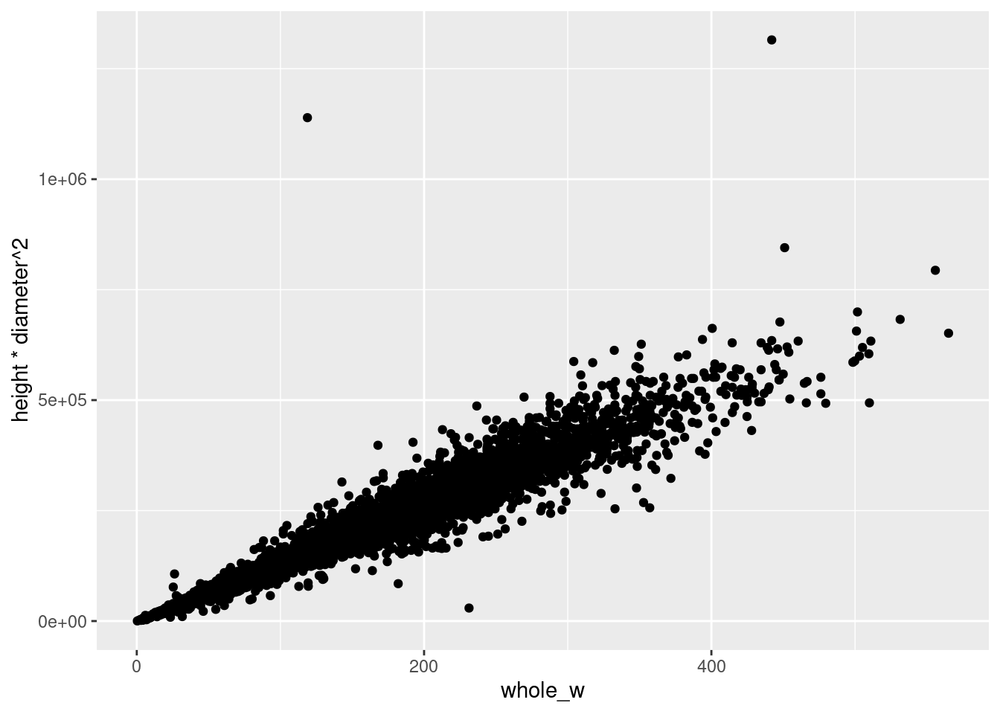
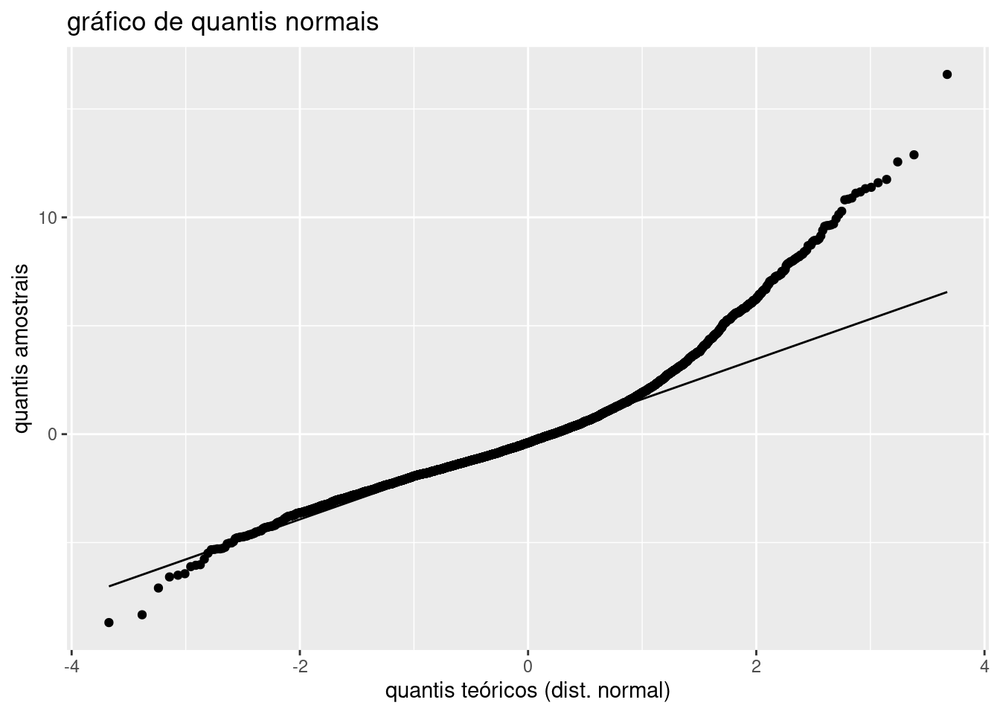

rm(list=ls())
abalone <- read_csv("data/abalone/abalone.data", col_names = FALSE)
names(abalone) <- c("sex", "length", "diameter", "height", "whole_w", "shucked_w", "viscera_w", "shell_w", "rings")GED-16: Análise de Regressão
AULA07: Prática (1o. semestre/2023)
Abalone é um tipo de molusco que vive em águas marinhas costeiras em diversas regiões do globo. A concha do abalone apresenta tamanho que varia entre 10 a 25cm e sua coloração interior iridescente nacarada é muito valorizada na confecção de jóias e ornamentos; além disso, a carne do animal é considerada uma iguaria em muitos países. Devido ao seu alto valor comercial e consequente pesca excessiva, além da degradação de seu habitat pela ação humana, diversas espécies de abalone atualmente correm risco de extinção. Existem mais de 100 espécies de abalone ao redor do mundo, das quais cerca de 15 são produzidas por meio de aquicultura. Determinar a idade do abalone de maneira acurada é importante tanto em termos comerciais (o valor comercial do abalone está associado à sua idade) bem como em termos ambientais (condições ambientais podem afetar a saúde do animal). A idade do animal pode ser determinada a partir da contagem do número de anéis na concha, utilizando um microscópio, a partir de um procedimento delicado e trabalhoso.

Os dados disponíveis no arquivo data/abalone/abalone.data foram obtidos no UCI Machine Learning Repository e são bastante utilizados na investigação de métodos de Machine Learning. Tais dados foram coletados a partir do estudo original:
Warwick J Nash, Tracy L Sellers, Simon R Talbot, Andrew J Cawthorn and Wes B Ford (1994) “The Population Biology of Abalone (Haliotis species) in Tasmania. I. Blacklip Abalone (H. rubra) from the North Coast and Islands of Bass Strait”, Sea Fisheries Division, Technical Report No. 48 (ISSN 1034-3288).
O principal objetivo do projeto era determinar a idade do molusco a partir de medidas físicas do animal mais fáceis de serem obtidas. Os dados originais foram pré-processados no sentido de remover observações faltantes e os valores das variáveis contínuas foram dividos por 200. Há um total de 4177 observações coletadas para 9 variáveis:
sex: sexo do animal (M, F, I)length: maior comprimento da concha (mm)diameter: comprimento perpendicular àlength(mm)height: comprimento da carne da concha (mm)whole_w: peso do animal (g)shucked_w: peso da carne (g)viscera_w: peso das vísceras (g)shell_w: peso da concha (g)rings: número de anéis (a idade é obtida somando 1.5)
Mais informações a respeito dos dados podem ser obtidas no arquivo data/abalone/abalone.names.
Análise Exploratória de Dados
Conduza a análise exploratória da massa de dados abalone, a fim de compreender suas características principais.
Voltaremos a utilizar essa massa de dados em atividades futuras.
Começamos identificando a estrutura dos dados:
str(abalone)spc_tbl_ [4,177 × 9] (S3: spec_tbl_df/tbl_df/tbl/data.frame)
$ sex : chr [1:4177] "M" "M" "F" "M" ...
$ length : num [1:4177] 0.455 0.35 0.53 0.44 0.33 0.425 0.53 0.545 0.475 0.55 ...
$ diameter : num [1:4177] 0.365 0.265 0.42 0.365 0.255 0.3 0.415 0.425 0.37 0.44 ...
$ height : num [1:4177] 0.095 0.09 0.135 0.125 0.08 0.095 0.15 0.125 0.125 0.15 ...
$ whole_w : num [1:4177] 0.514 0.226 0.677 0.516 0.205 ...
$ shucked_w: num [1:4177] 0.2245 0.0995 0.2565 0.2155 0.0895 ...
$ viscera_w: num [1:4177] 0.101 0.0485 0.1415 0.114 0.0395 ...
$ shell_w : num [1:4177] 0.15 0.07 0.21 0.155 0.055 0.12 0.33 0.26 0.165 0.32 ...
$ rings : num [1:4177] 15 7 9 10 7 8 20 16 9 19 ...
- attr(*, "spec")=
.. cols(
.. X1 = col_character(),
.. X2 = col_double(),
.. X3 = col_double(),
.. X4 = col_double(),
.. X5 = col_double(),
.. X6 = col_double(),
.. X7 = col_double(),
.. X8 = col_double(),
.. X9 = col_double()
.. )
- attr(*, "problems")=<externalptr> Percebemos que as variáveis já possuem nomes explicativos. Porém, percebe-se que sex está com tipo char quando deveria ser Factor. Vamos também obter a idade, a partir do número de anéis do Abalone, e retornar os valores contínuos para suas escalas originais (multiplicar por 200).
abalone <- abalone %>% mutate_at("sex", as.factor)
abalone$age <- abalone$rings + 1.5
abalone$length <- abalone$length * 200
abalone$diameter <- abalone$diameter * 200
abalone$height <- abalone$height * 200
abalone$whole_w <- abalone$whole_w * 200
abalone$shucked_w <- abalone$shucked_w * 200
abalone$viscera_w <- abalone$viscera_w * 200
abalone$shell_w <- abalone$shell_w * 200Dessa forma, temos o sumário do conjunto de dados:
summary(abalone) sex length diameter height whole_w
F:1307 Min. : 15.0 Min. : 11.00 Min. : 0.0 Min. : 0.4
I:1342 1st Qu.: 90.0 1st Qu.: 70.00 1st Qu.: 23.0 1st Qu.: 88.3
M:1528 Median :109.0 Median : 85.00 Median : 28.0 Median :159.9
Mean :104.8 Mean : 81.58 Mean : 27.9 Mean :165.7
3rd Qu.:123.0 3rd Qu.: 96.00 3rd Qu.: 33.0 3rd Qu.:230.6
Max. :163.0 Max. :130.00 Max. :226.0 Max. :565.1
shucked_w viscera_w shell_w rings
Min. : 0.20 Min. : 0.10 Min. : 0.30 Min. : 1.000
1st Qu.: 37.20 1st Qu.: 18.70 1st Qu.: 26.00 1st Qu.: 8.000
Median : 67.20 Median : 34.20 Median : 46.80 Median : 9.000
Mean : 71.87 Mean : 36.12 Mean : 47.77 Mean : 9.934
3rd Qu.:100.40 3rd Qu.: 50.60 3rd Qu.: 65.80 3rd Qu.:11.000
Max. :297.60 Max. :152.00 Max. :201.00 Max. :29.000
age
Min. : 2.50
1st Qu.: 9.50
Median :10.50
Mean :11.43
3rd Qu.:12.50
Max. :30.50 Percebe-se que algumas observações possuem altura zero. Avaliando essas observações:
abalone[abalone$height==0,]# A tibble: 2 × 10
sex length diameter height whole_w shucked_w viscera_w shell_w rings age
<fct> <dbl> <dbl> <dbl> <dbl> <dbl> <dbl> <dbl> <dbl> <dbl>
1 I 86 68 0 85.6 41.3 17.2 23 8 9.5
2 I 63 46 0 26.8 11.5 5.7 70.1 6 7.5Obtemos duas observações que não fazem sentido (altura zero e pesos diferentes de zero). Podemos retirá-las do conjunto de dados.
abalone <- abalone[abalone$height!=0,]PARTE 3: Construção de Modelos
Continuaremos considerando que a idade do abalone seja dada pela seguinte forma:
\[\textsf{age} = \textsf{rings} + \delta, \quad \delta \sim N(\mu = 1.5, \sigma = 0.5)\]
set.seed(16)
abalone <- abalone %>%
# cria nova variável `age`
mutate(age = rings + rnorm(n = nrow(abalone), mean = 1.5, sd = 0.5))Utilize o procedimento para construção de modelos para prever a idade de um abalone (age):
Modelo I: considere como variáveis explicativas length, diameter, shell_w e sex (e transformações).
Modelo II: considere como variáveis explicativas height, diameter, shell_w e sex (e transformações).
Lembre-se que os passos apropriados em análise de regressão consistem em:
construção do modelo
- formulação do modelo
- ajuste do modelo
- avaliação do modelo
Para a formulação dos modelos, devemos utilizar o seguinte procedimento:
- inclusão de variáveis quantitativas (polinomiais, transformações, etc.);
- inclusão de variáveis qualitativas;
- inclusão de interações entre termos contendo variáveis quantitativas e qualitativas.
utilização do modelo
- para realizar inferências
- para auxiliar o processo de tomada de decisão
Não esqueça de realizar análise de resíduos, inferências e validação do modelo. Forneça interpretações e discussão para os resultados obtidos.
Construção do Modelo 1
1.1) Modelo para a Variável Quantitativa
A princípio, vamos construir o modelo com os termos quadráticos de cada variável explicativa quantitativa: \[ E[age] = \beta_0 + \beta_1 length + \beta_{11}length^2 + \beta_2 diameter + \beta_{22} diameter^2 + \beta_3 shell_w + \beta_{33} shell_w^2 + \beta_{12} length \cdot diameter + \beta_{13} length \cdot shell_w + \beta_{23} diameter \cdot shell_w \] Começaremos avaliando a correlação dos termos lineares e quadráticos:
cor(abalone$length, abalone$length^2)[1] 0.9875853cor(abalone$diameter, abalone$diameter^2)[1] 0.9866137cor(abalone$shell_w, abalone$shell_w^2)[1] 0.9404706Percebe-se que todas as correlações são muito altas. Podemos conferir esse comportamento visualmente:
# diagramas de dispersão
ggplot(abalone, aes(x = length, y = length^2)) +
geom_point() +
ggtitle("Diagrama de dispersão: `length^2` x `length`")
ggplot(abalone, aes(x = diameter, y = diameter^2)) +
geom_point() +
ggtitle("Diagrama de dispersão: `diameter^2` x `diameter`")
ggplot(abalone, aes(x = shell_w, y = shell_w^2)) +
geom_point() +
ggtitle("Diagrama de dispersão: `shell_w^2` x `shell_w`")


Vamos então centralizar as variáveis explicativas:
# centralizando a variável explicativa
abalone <- abalone |>
mutate(diameter_c = diameter - mean(diameter),
shell_w_c = shell_w - mean(shell_w),
length_c = length - mean(length))
# novas correlações
cor(abalone$length_c, abalone$length_c^2)[1] -0.4457653cor(abalone$diameter_c, abalone$diameter_c^2)[1] -0.4361484cor(abalone$shell_w_c, abalone$shell_w_c^2)[1] 0.3903075Percebe-se uma redução significativa em todas as correlações. Podemos agora construir um modelo inicial com as variáveis explicativas quantitativas centralizadas:
# modelo polinomial de 2a. ordem completo para as variáveis quantitativas
m1_quant <- lm(age ~ I(length_c^2) + I(diameter_c^2) + I(shell_w_c^2) + length_c*shell_w_c+ diameter_c*length_c + diameter_c* shell_w_c , data = abalone)
# resumo do modelo
summary(m1_quant)
Call:
lm(formula = age ~ I(length_c^2) + I(diameter_c^2) + I(shell_w_c^2) +
length_c * shell_w_c + diameter_c * length_c + diameter_c *
shell_w_c, data = abalone)
Residuals:
Min 1Q Median 3Q Max
-8.7503 -1.4690 -0.3961 1.0045 16.5719
Coefficients:
Estimate Std. Error t value Pr(>|t|)
(Intercept) 12.5381347 0.0590556 212.311 < 2e-16 ***
I(length_c^2) -0.0020872 0.0006210 -3.361 0.000784 ***
I(diameter_c^2) -0.0045317 0.0013369 -3.390 0.000706 ***
I(shell_w_c^2) -0.0002512 0.0001065 -2.360 0.018320 *
length_c -0.1180018 0.0101822 -11.589 < 2e-16 ***
shell_w_c 0.1497556 0.0051200 29.249 < 2e-16 ***
diameter_c 0.0230993 0.0130173 1.775 0.076052 .
length_c:shell_w_c -0.0013842 0.0007141 -1.938 0.052644 .
length_c:diameter_c 0.0051125 0.0015577 3.282 0.001039 **
shell_w_c:diameter_c 0.0010126 0.0009031 1.121 0.262262
---
Signif. codes: 0 '***' 0.001 '**' 0.01 '*' 0.05 '.' 0.1 ' ' 1
Residual standard error: 2.373 on 4165 degrees of freedom
Multiple R-squared: 0.473, Adjusted R-squared: 0.4719
F-statistic: 415.4 on 9 and 4165 DF, p-value: < 2.2e-16Percebe-se que o modelo é significativo (passa no teste-F global com valor-p da ordem de e-16) e o coeficiente de determinação ajustado indica que aproximadamente 47.2% da variabilidade na resposta é explicada pelo modelo. Com \(\alpha = 5%\), percebemos que os coeficientes de shell_w_c^2, diameter_c, length_c:shell_w_c e shell_w_c:diameter_c não são significantes. Vamos considerar um modelo reduzido sem essas variáveis, exceto por diameter_c, uma vez que o princípio da hierarquia determina que, se diameter_c for removido, diameter_c^2 também deve ser, porém o modelo considera diameter_c^2 como estatisticamente significante, manteremos o termo linear.
# modelo reduzido
m1_red <- lm(age ~ I(length_c^2) + I(diameter_c^2) + diameter_c*length_c + shell_w_c , data = abalone)
# resumo do modelo reduzido
summary(m1_red)
Call:
lm(formula = age ~ I(length_c^2) + I(diameter_c^2) + diameter_c *
length_c + shell_w_c, data = abalone)
Residuals:
Min 1Q Median 3Q Max
-7.833 -1.495 -0.438 1.023 16.440
Coefficients:
Estimate Std. Error t value Pr(>|t|)
(Intercept) 12.3059159 0.0526763 233.614 < 2e-16 ***
I(length_c^2) -0.0022515 0.0005927 -3.799 0.000148 ***
I(diameter_c^2) -0.0036096 0.0010585 -3.410 0.000656 ***
diameter_c 0.0476620 0.0127519 3.738 0.000188 ***
length_c -0.1134712 0.0102098 -11.114 < 2e-16 ***
shell_w_c 0.1219487 0.0038340 31.807 < 2e-16 ***
diameter_c:length_c 0.0039313 0.0015081 2.607 0.009174 **
---
Signif. codes: 0 '***' 0.001 '**' 0.01 '*' 0.05 '.' 0.1 ' ' 1
Residual standard error: 2.393 on 4168 degrees of freedom
Multiple R-squared: 0.4638, Adjusted R-squared: 0.463
F-statistic: 600.8 on 6 and 4168 DF, p-value: < 2.2e-16Todos os coeficientes são estatisiticamente significantes, o modelo reduzido é significativo pela estatística F e o coeficiente de determinação ajustado indica que aproximadamente 46.3% da variabilidade na resposta é explicada pelo modelo.
Vamos agora realizar o teste de hipótese a seguir: Ho: \(\beta_{33} = \beta_{13} = \beta_{23} = 0\)
Ha: nem todos os coeficientes são nulos
# teste-F (comparação de modelos aninhados)
anova(m1_red, m1_quant, test="F")Analysis of Variance Table
Model 1: age ~ I(length_c^2) + I(diameter_c^2) + diameter_c * length_c +
shell_w_c
Model 2: age ~ I(length_c^2) + I(diameter_c^2) + I(shell_w_c^2) + length_c *
shell_w_c + diameter_c * length_c + diameter_c * shell_w_c
Res.Df RSS Df Sum of Sq F Pr(>F)
1 4168 23870
2 4165 23458 3 411.91 24.379 1.237e-15 ***
---
Signif. codes: 0 '***' 0.001 '**' 0.01 '*' 0.05 '.' 0.1 ' ' 1O teste indica que podemos rejeitar a hipótese nula, logo não podemos concluir que os três coeficientes são nulos. Vamos tentar incluir shell_w_c^2 no modelo reduzido e avaliar novamente:
# modelo reduzido
m1_red_2 <- lm(age ~ I(length_c^2) + I(diameter_c^2) + I(shell_w_c^2) + diameter_c*length_c + shell_w_c , data = abalone)
# resumo do modelo reduzido
summary(m1_red_2)
Call:
lm(formula = age ~ I(length_c^2) + I(diameter_c^2) + I(shell_w_c^2) +
diameter_c * length_c + shell_w_c, data = abalone)
Residuals:
Min 1Q Median 3Q Max
-8.5092 -1.4685 -0.3967 1.0059 16.5177
Coefficients:
Estimate Std. Error t value Pr(>|t|)
(Intercept) 1.253e+01 5.896e-02 212.490 < 2e-16 ***
I(length_c^2) -2.417e-03 5.884e-04 -4.108 4.07e-05 ***
I(diameter_c^2) -3.429e-03 1.051e-03 -3.264 0.00111 **
I(shell_w_c^2) -4.148e-04 5.079e-05 -8.166 4.19e-16 ***
diameter_c 2.453e-02 1.297e-02 1.892 0.05854 .
length_c -1.197e-01 1.016e-02 -11.785 < 2e-16 ***
shell_w_c 1.498e-01 5.111e-03 29.314 < 2e-16 ***
diameter_c:length_c 4.193e-03 1.497e-03 2.802 0.00511 **
---
Signif. codes: 0 '***' 0.001 '**' 0.01 '*' 0.05 '.' 0.1 ' ' 1
Residual standard error: 2.374 on 4167 degrees of freedom
Multiple R-squared: 0.4722, Adjusted R-squared: 0.4713
F-statistic: 532.6 on 7 and 4167 DF, p-value: < 2.2e-16Incluindo novamente shell_w_c^2, percebemos que o termo agora recebe p-valor muito baixo, indicando ser significante. Percebemos nesse ultimo modelo tambem que diameter_c voltou a ser considerado não significativo (ainda que esteja no limiar), porém o termo de interação diameter_c:length_c e o termo quadrático diameter_c^2 ainda são significativos. Esse modelo reduzido também é significativo pela estatística F e o coeficiente de determinação ajustado indica que aproximadamente 47.2% da variabilidade na resposta é explicada pelo modelo. Vamos compará-lo ao modelo m1_quant agora, com as seguintes hipóteses:
Ho: \(\beta_{13} = \beta_{23} = 0\)
Ha: nem todos os coeficientes são nulos
# teste-F (comparação de modelos aninhados)
anova(m1_red_2, m1_quant, test="F")Analysis of Variance Table
Model 1: age ~ I(length_c^2) + I(diameter_c^2) + I(shell_w_c^2) + diameter_c *
length_c + shell_w_c
Model 2: age ~ I(length_c^2) + I(diameter_c^2) + I(shell_w_c^2) + length_c *
shell_w_c + diameter_c * length_c + diameter_c * shell_w_c
Res.Df RSS Df Sum of Sq F Pr(>F)
1 4167 23494
2 4165 23458 2 35.961 3.1926 0.04117 *
---
Signif. codes: 0 '***' 0.001 '**' 0.01 '*' 0.05 '.' 0.1 ' ' 1Ainda não podemos inferir, com 95% de confiança, que os coeficientes são nulos (rejeita-se a hipótese nula). Vamos adicionar novamente o termo length_c:shell_w_c, pois ele possui menor p-valor em m1_quant do que shell_w_c:diameter_c:
# modelo reduzido
m1_red_3 <- lm(age ~ I(length_c^2) + I(diameter_c^2) + I(shell_w_c^2) + diameter_c*length_c + shell_w_c*length_c , data = abalone)
# resumo do modelo reduzido
summary(m1_red_3)
Call:
lm(formula = age ~ I(length_c^2) + I(diameter_c^2) + I(shell_w_c^2) +
diameter_c * length_c + shell_w_c * length_c, data = abalone)
Residuals:
Min 1Q Median 3Q Max
-8.6914 -1.4786 -0.3987 1.0149 16.5932
Coefficients:
Estimate Std. Error t value Pr(>|t|)
(Intercept) 12.5352978 0.0590032 212.451 < 2e-16 ***
I(length_c^2) -0.0023037 0.0005903 -3.903 9.66e-05 ***
I(diameter_c^2) -0.0036080 0.0010530 -3.427 0.000617 ***
I(shell_w_c^2) -0.0002155 0.0001016 -2.122 0.033922 *
diameter_c 0.0244792 0.0129594 1.889 0.058972 .
length_c -0.1186703 0.0101650 -11.674 < 2e-16 ***
shell_w_c 0.1494173 0.0051113 29.233 < 2e-16 ***
diameter_c:length_c 0.0046934 0.0015122 3.104 0.001924 **
length_c:shell_w_c -0.0006514 0.0002877 -2.264 0.023598 *
---
Signif. codes: 0 '***' 0.001 '**' 0.01 '*' 0.05 '.' 0.1 ' ' 1
Residual standard error: 2.373 on 4166 degrees of freedom
Multiple R-squared: 0.4729, Adjusted R-squared: 0.4719
F-statistic: 467.1 on 8 and 4166 DF, p-value: < 2.2e-16O modelo é significante pela estatística F e o coeficiente de determinação ajustado indica que aproximadamente 47.2% da variabilidade na resposta é explicada por ele. Percebe-se que a tabela ANOVA indica que apenas diameter_c é não significante agora.
Realizando o teste de hipótese ao comparar com m1_quant: Ho: \(\beta_{23} = 0\)
Ha: \(\beta_{23} \neq 0\)
# teste-F (comparação de modelos aninhados)
anova(m1_red_3, m1_quant, test="F")Analysis of Variance Table
Model 1: age ~ I(length_c^2) + I(diameter_c^2) + I(shell_w_c^2) + diameter_c *
length_c + shell_w_c * length_c
Model 2: age ~ I(length_c^2) + I(diameter_c^2) + I(shell_w_c^2) + length_c *
shell_w_c + diameter_c * length_c + diameter_c * shell_w_c
Res.Df RSS Df Sum of Sq F Pr(>F)
1 4166 23465
2 4165 23458 1 7.0802 1.2571 0.2623Não podemos rejeitar a hipótese nula. Aceitamos-a, portanto, e temos um modelo reduzido da forma \[ E[age] = \beta_0 + \beta_1 length + \beta_{11}length^2 + \beta_2 diameter + \beta_{22} diameter^2 + \beta_3 shell_w + \beta_{33} shell_w^2 + \beta_{12} length \cdot diameter + \beta_{13} length \cdot shell_w \] Podemos prosseguir com a análise de resíduos para avaliar a validade do modelo:
# Constrói tabela com dados do modelo `m_red`
abalone_m1_quant_red_3_data <- abalone %>%
# inclui coluna com valores ajustados
mutate(fitted = m1_red_3$fit) %>%
mutate(resid = m1_red_3$res)
# Gera gráficos dos resíduos:
ggplot(abalone_m1_quant_red_3_data, aes(x = fitted, y = resid)) +
geom_point() +
geom_hline(yintercept = 0, linetype = "dashed") +
ggtitle("gráfico de resíduos: modelo m1_red_3") +
labs(y = "resíduos", x = "resposta ajustada (age)")
# Gráfico de quantis
ggplot(abalone_m1_quant_red_3_data, aes(sample = resid)) +
stat_qq() + stat_qq_line() +
ggtitle("gráfico de quantis normais") +
labs(y = "quantis amostrais", x = "quantis teóricos (dist. normal)") 

O gráfico de resíduos indica um efeito cone, com o aumento da variância com o aumento de age. Conferiremos essa hipótese a seguir com o teste de Breusch-Pagan. Porém, não parece existir tendência de variação sistemática nos resíduos. O gráfico de quantis sugere desvio da normalidade, pequeno na cauda esquerda e mais acentuado na cauda direita. Esse desvio provavelmente não causará grandes problemas, mas é possível que transformações de variáveis ajudem a reduzir a fuga de normalidade.
# Teste de Homoscedasticidade de Breusch-Pagan
# Ho: sigma^2 = cte
# Ha: sigma^2 != cte
library(lmtest)
bptest(m1_red_3)
studentized Breusch-Pagan test
data: m1_red_3
BP = 263.31, df = 8, p-value < 2.2e-16# Teste de Homoscedasticidade de Breusch-Pagan
# Ho: sigma^2 = cte
# Ha: sigma^2 != cte
library(lmtest)
bptest(m1_red_3)
studentized Breusch-Pagan test
data: m1_red_3
BP = 263.31, df = 8, p-value < 2.2e-16De fato, os testes rejeitam as hipóteses nulas e confirmam as violações nas hipóteses de homoscedasticidade e de normalidade.
1.2)Inclusão da Variável Categórica
Prosseguiremos adicionando a variável categórica sex ao modelo reduzido m1_red_3:¨
# modelo que inclui variável explicativa qualitativa `cylinder`
m_quali <- lm(age ~ I(length_c^2) + I(diameter_c^2) + I(shell_w_c^2) + diameter_c*length_c + shell_w_c*length_c + sex, data = abalone)
# resumo do modelo
summary(m_quali)
Call:
lm(formula = age ~ I(length_c^2) + I(diameter_c^2) + I(shell_w_c^2) +
diameter_c * length_c + shell_w_c * length_c + sex, data = abalone)
Residuals:
Min 1Q Median 3Q Max
-8.5733 -1.4657 -0.3800 0.9868 16.5350
Coefficients:
Estimate Std. Error t value Pr(>|t|)
(Intercept) 12.7701740 0.0800903 159.447 < 2e-16 ***
I(length_c^2) -0.0022048 0.0005875 -3.753 0.000177 ***
I(diameter_c^2) -0.0031904 0.0010498 -3.039 0.002388 **
I(shell_w_c^2) -0.0001867 0.0001012 -1.846 0.065010 .
diameter_c 0.0176553 0.0129331 1.365 0.172287
length_c -0.1126790 0.0101526 -11.099 < 2e-16 ***
shell_w_c 0.1417059 0.0052193 27.150 < 2e-16 ***
sexI -0.7269988 0.1113484 -6.529 7.41e-11 ***
sexM -0.1527700 0.0892594 -1.712 0.087058 .
diameter_c:length_c 0.0041116 0.0015074 2.728 0.006407 **
length_c:shell_w_c -0.0005113 0.0002871 -1.781 0.074989 .
---
Signif. codes: 0 '***' 0.001 '**' 0.01 '*' 0.05 '.' 0.1 ' ' 1
Residual standard error: 2.361 on 4164 degrees of freedom
Multiple R-squared: 0.4785, Adjusted R-squared: 0.4772
F-statistic: 382.1 on 10 and 4164 DF, p-value: < 2.2e-16